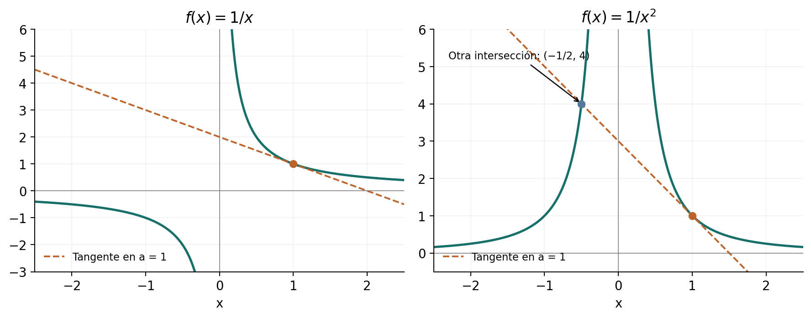
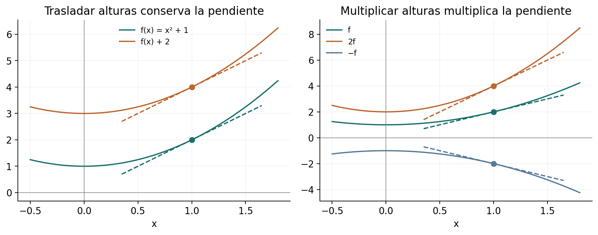
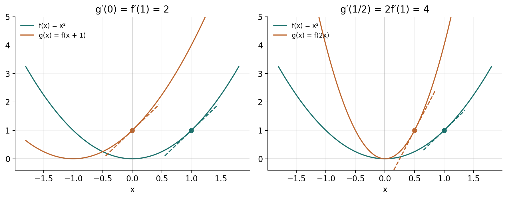
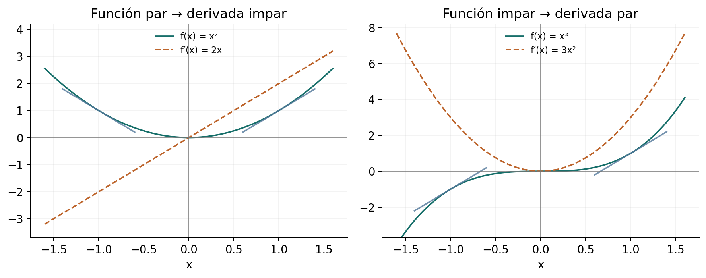

Capítulo 9 — Derivadas
Solucionario explicado de Matemática Abierta · A. Peña
Problemas procedentes de Michael Spivak, Calculus, 4.ª edición, capítulo 9, pp. 163–167 (PDF 183–187). Se conserva el contenido matemático necesario de los enunciados; las soluciones, los ejemplos complementarios y las figuras son propios.
El punto de partida es el cociente incremental \[f'(a)=\lim_{h\to0}\frac{f(a+h)-f(a)}h.\] Todos los límites que definen derivadas son finitos y bilaterales, salvo indicación expresa. Las pruebas emplean esta definición y los resultados de límites y continuidad ya disponibles. Las reglas de producto, cociente y cadena se desarrollan en el capítulo siguiente y no se presuponen aquí. Cuando se escribe una igualdad de derivadas, se entiende que la derivada requerida de la función original existe en el punto señalado.
Ejercicio 1 — SPV4-C09-E001
Referencia: p. 163. Problema: para \(f(x)=1/x\), (a) obtener \(f'(a)\) desde la definición, con \(a\ne0\); (b) demostrar que la tangente solo intersecta la gráfica en su punto de tangencia.
Solución
(a) Restrinja \(|h|<|a|/2\), para que \(a+h\ne0\). Para \(h\ne0\), \[\frac{1/(a+h)-1/a}{h}=-\frac1{a(a+h)}\longrightarrow-\frac1{a^2}.\] Así \(f'(a)=-1/a^2\).
(b) La tangente tiene ecuación \(y=1/a-(x-a)/a^2=2/a-x/a^2\). Una intersección con la gráfica debe tener \(x\ne0\) y satisfacer \[\frac1x=\frac2a-\frac{x}{a^2}\quad\Longleftrightarrow\quad a^2=2ax-x^2\quad\Longleftrightarrow\quad(x-a)^2=0.\] Su única abscisa es \(a\). Que la ecuación tenga una raíz doble expresa el contacto de la recta con la curva; aquí, además, no hay ninguna otra intersección.
Ejercicio 2 — SPV4-C09-E002
Referencia: p. 163. Problema: para \(f(x)=1/x^2\), (a) calcular \(f'(a)\) con \(a\ne0\); (b) hallar la otra intersección de la tangente con la gráfica.
Solución
(a) Para \(h\ne0\) suficientemente pequeño, \[\frac{1/(a+h)^2-1/a^2}{h}=\frac{-2a-h}{a^2(a+h)^2}\longrightarrow-\frac2{a^3}.\]
(b) La tangente es \(y=3/a^2-2x/a^3\). Igualar con \(1/x^2\), para \(x\ne0\), equivale a \[2x^3-3ax^2+a^3=(x-a)^2(2x+a)=0.\] Además del contacto en \(x=a\), aparece exactamente \(x=-a/2\). Su ordenada es \(4/a^2\) y su signo horizontal es opuesto al de \(a\). La multiplicación por los denominadores no introdujo \(x=0\), que tampoco satisface el polinomio porque \(a\ne0\).

Ejercicio 3 — SPV4-C09-E003
Referencia: p. 163. Problema: obtener la derivada de \(f(x)=\sqrt x\) en \(a>0\).
Solución
Para \(h\ne0\) y \(a+h>0\), racionalizar elimina el cociente indeterminado: \[\frac{\sqrt{a+h}-\sqrt a}{h}=\frac1{\sqrt{a+h}+\sqrt a}\longrightarrow\frac1{2\sqrt a}.\] La continuidad de la raíz justifica el límite. En cero la misma expresión por la derecha vale \(1/\sqrt h\) y crece sin cota; no proporciona una derivada real finita, y cero tampoco es un punto interior del dominio.
Ejercicio 4 — SPV4-C09-E004
Referencia: p. 163. Problema: con \(S_n(x)=x^n\), \(n\ge1\) entero, conjeturar y demostrar una fórmula para \(S_n'\).
Solución
Los primeros casos sugieren \(S_n'(a)=na^{n-1}\). El binomio lo demuestra: \[\frac{(a+h)^n-a^n}{h}=na^{n-1}+\sum_{j=2}^{n}\binom nj a^{n-j}h^{j-1}.\] La suma tiene finitos términos y cada uno tiende a cero. Para \(n=1\) es vacía y queda \(1\). Por tanto \[S_n'(x)=nx^{n-1}.\] En \(n=1\) se interpreta la fórmula como la constante \(1\), también en cero. Los exponentes que quedan en la suma son no negativos.
Ejercicio 5 — SPV4-C09-E005
Referencia: p. 163. Problema: hallar la derivada de \(f(x)=|x|\).
Solución
En un entorno de cada \(a>0\), \(f(x)=x\), y el cociente incremental vale \(1\); si \(a<0\), \(f(x)=-x\) cerca de \(a\) y vale \(-1\). En cero el cociente es \(|h|/h\): vale \(1\) por la derecha y \(-1\) por la izquierda. Así \[f'(x)=\begin{cases}1,&x>0,\\-1,&x<0,\end{cases}\] y \(f'(0)\) no existe. La continuidad de la gráfica en el vértice no iguala las pendientes de sus dos lados.
Ejercicio 6 — SPV4-C09-E006
Referencia: p. 163. Problema: demostrar desde la definición e ilustrar (a) la derivada de \(f+c\); (b) la de \(cf\), para una constante \(c\).
Solución
(a) Si \(g=f+c\), las dos constantes se cancelan: \[\frac{g(x+h)-g(x)}h=\frac{f(x+h)-f(x)}h.\] Por tanto \(g'(x)=f'(x)\). Trasladar verticalmente la curva y todas sus secantes no cambia sus pendientes.
(b) Si \(g=cf\), su cociente es \(c[f(x+h)-f(x)]/h\), cuyo límite es \(cf'(x)\). La multiplicación vertical multiplica por \(c\) el ascenso de cada secante y deja intacto su recorrido horizontal. Un \(c\) negativo invierte el signo de la pendiente. Para \(c=0\), \(g\) es constante y tiene derivada cero incluso en puntos donde \(f'\) no exista; en esos puntos no se escribe \(0\cdot f'(x)\).

Ejercicio 7 — SPV4-C09-E007
Referencia: p. 163. Problema: para \(f(x)=x^3\), (a–c) evaluar \(f'\) en los argumentos indicados; (d) comparar \(f'(x^2)\) con la derivada de \(g(x)=f(x^2)\).
Solución
E004 da \(f'(u)=3u^2\). La letra \(u\) permite ver qué operación se está haciendo: primero se deriva y después se introduce el argumento.
(a) \(f'(9)=243\), \(f'(25)=1875\), \(f'(36)=3888\).
(b) \(f'(3^2)=243\), \(f'(5^2)=1875\), \(f'(6^2)=3888\); son los mismos argumentos escritos de otra forma.
(c) \(f'(a^2)=3a^4\) y \(f'(x^2)=3x^4\).
(d) En cambio, \(g(x)=x^6\), de modo que \(g'(x)=6x^5\) por E004. La expresión \(f'(x^2)\) evalúa una función ya derivada; \(g'(x)\) deriva la composición completa. Aquí se obtuvieron ambas sin recurrir a la regla de la cadena.
Ejercicio 8 — SPV4-C09-E008
Referencia: p. 164. Problema: demostrar e ilustrar (a) \(g'(x)=f'(x+c)\) si \(g(x)=f(x+c)\); (b) \(g'(x)=cf'(cx)\) si \(g(x)=f(cx)\); (c) periodicidad de la derivada de una función diferenciable periódica.
Solución
(a) La definición en \(x\) produce \[\frac{g(x+h)-g(x)}h=\frac{f((x+c)+h)-f(x+c)}h\longrightarrow f'(x+c).\] La curva se traslada horizontalmente una distancia \(-c\). En puntos correspondientes, las secantes tienen el mismo ascenso y la misma separación horizontal.
(b) Si \(c\ne0\), ponga \(k=ch\). Entonces \(k\to0\) por ambos lados cuando \(h\to0\), incluso si \(c<0\), y \[\frac{f(cx+ch)-f(cx)}h=c\frac{f(cx+k)-f(cx)}k\longrightarrow cf'(cx).\] La escala horizontal explica el factor: el incremento del argumento de \(f\) es \(c\) veces el incremento de \(x\). Si \(c=0\) y \(f(0)\) está definido, \(g\) es constante y \(g'=0\), sin requerir que \(f'(0)\) exista.

(c) Si \(f(x+p)=f(x)\), con período \(p\ne0\), la función de (a), con \(c=p\), es la propia \(f\). Por ello \(f'(x+p)=f'(x)\). El período se conserva, aunque la derivada podría tener otros períodos adicionales; por ejemplo, una derivada constante.
Ejercicio 9 — SPV4-C09-E009
Referencia: p. 164. Problema: calcular \(f'(x)\) y \(f'(x+3)\) en tres casos de traslación.
Solución
En los casos donde se da \(f(x+3)\), cambie primero la variable: si \(u=x+3\), entonces \(x=u-3\). Esto identifica la función que realmente hay que derivar.
| Inciso y dato | Función recuperada | \(f'(x)\) | \(f'(x+3)\) |
|---|---|---|---|
| (i) \(f(x)=(x+3)^5\) | \(f(u)=(u+3)^5\) | \(5(x+3)^4\) | \(5(x+6)^4\) |
| (ii) \(f(x+3)=x^5\) | \(f(u)=(u-3)^5\) | \(5(x-3)^4\) | \(5x^4\) |
| (iii) \(f(x+3)=(x+5)^7\) | \(f(u)=(u+2)^7\) | \(7(x+2)^6\) | \(7(x+5)^6\) |
E004 y E008(a) justifican las derivadas de la tabla. La evaluación final suma tres al argumento de \(f'\), no a su valor.
Ejercicio 10 — SPV4-C09-E010
Referencia: p. 164. Problema: interpretar \(f'(x)\) en (i) \(f(x)=g(t+x)\); (ii) \(f(t)=g(t+x)\), manteniendo fijo el parámetro que no es la variable de \(f\).
Solución
(i) Con \(t\) fijo, \(f(u)=g(t+u)\), y E008(a) da \(f'(x)=g'(t+x)\).
(ii) Con el desplazamiento \(x\) fijo, la relación define \(f(u)=g(u+x)\). Su derivada en un argumento \(u\) es \(g'(u+x)\). Evaluarla en \(u=x\) da \(f'(x)=g'(2x)\).
La repetición de la letra \(x\) puede confundir el papel de parámetro con el de argumento de evaluación. Escribiendo \(f_p(u)=g(u+p)\) queda \(f_p'(p)=g'(2p)\): al formar el cociente incremental, \(p\) no cambia. Derivar la función \(u\mapsto g(2u)\) sería otra tarea y produciría \(2g'(2u)\).
Ejercicio 11 — SPV4-C09-E011
Referencia: p. 164. Problema: (a) comparar \(s'=ks\) con una caída no trivial \(s(t)=ct^2\); (b-i–ii) verificar aceleración constante y la relación velocidad–distancia para \(s(t)=(A/2)t^2\); (c) calcular tiempos, velocidad final y posición a media velocidad para una caída de \(400\) pies, con \(A=32\) pies/s².
Solución
(a) Si \(c\ne0\), entonces \(s'(t)=2ct\). La proporcionalidad con constante \(k\) exigiría \(2ct=kct^2\), y para \(t>0\) se obtendría \(k=2/t\), que no puede ser constante en un intervalo de tiempos. El movimiento trivial \(c=0\) sí satisface ambas ecuaciones; se excluye al hablar de una caída efectiva. Esta es la incompatibilidad matemática solicitada, sin añadir una atribución histórica independiente.
(b-i) E004 y E006 dan \(s'(t)=At\), y una nueva aplicación de la definición da \(s''(t)=A\).
(b-ii) \([s'(t)]^2=A^2t^2=2A[(A/2)t^2]=2As(t)\).
(c) Para \(t\ge0\), \(s(t)=16t^2\). El impacto en el suelo se produce cuando \(16t^2=400\), esto es, a los \(5\) segundos; la velocidad hacia abajo es \(s'(5)=32\cdot5=160\) pies/s. La mitad de esa velocidad se alcanza en \(t=5/2\) s, cuando la caída recorrida es \(16(5/2)^2=100\) pies. La altura restante sobre el suelo es entonces \(400-100=300\) pies. Se distingue la distancia caída de la altura: son funciones diferentes. Los cálculos corresponden al modelo ideal dado, con inicio en reposo y sin resistencia.
Ejercicio 12 — SPV4-C09-E012
Referencia: p. 164. Problema: posiciones \(a(t),b(t)\) y límite espacial de velocidad \(L\). (a) expresar que A circula al límite; (b) probarlo para B si \(b(t)=a(t-1)\); (c) determinar cuándo se conserva si \(b(t)=a(t)-d\), con \(d>0\) constante.
Solución
(a) En el sentido creciente de la carretera, la ecuación es \(a'(t)=L(a(t))\). El límite se evalúa en la posición, no en el tiempo. Si se permitieran ambos sentidos, la rapidez se expresaría como \(|a'(t)|\); aquí se mantiene la orientación implícita en el recorrido.
(b) E008(a) da \(b'(t)=a'(t-1)=L(a(t-1))=L(b(t))\). Cada automóvil atraviesa cada posición con la velocidad prescrita allí, aunque en momentos distintos. La afirmación se aplica a tiempos para los que ambas posiciones están definidas.
(c) Ahora \(b'(t)=a'(t)\) por E006(a). Así B circula al límite exactamente cuando \[L(a(t)-d)=L(a(t))\quad\text{para todos los tiempos del recorrido}.\] Esta es la condición necesaria y suficiente sobre las posiciones efectivamente visitadas. Que \(L\) sea constante o tenga período \(d\) en toda la carretera es suficiente, pero no necesario fuera de esas posiciones. Una distancia fija no equivale, en general, a un retraso temporal fijo.
Ejercicio 13 — SPV4-C09-E013
Referencia: p. 165. Problema: pegar \(f\) a la izquierda de \(a\) y \(g\) a su derecha, suponiendo \(f(a)=g(a)\) y derivadas laterales coincidentes.
Solución
Sea \(h(x)=f(x)\) para \(x\le a\) y \(h(x)=g(x)\) para \(x\ge a\). La igualdad central hace consistente la definición. El cociente \([h(a+t)-h(a)]/t\) es el de \(f\) si \(t<0\) y el de \(g\) si \(t>0\). Sus límites laterales son el mismo número \(m\) por hipótesis. Para una tolerancia \(\varepsilon\), tome el menor de los dos radios que controlan esos límites: cubre todos los \(t\ne0\) pequeños. Por tanto \(h'(a)=m\). Basta la existencia de las derivadas laterales mencionadas; no se requiere diferenciabilidad de cada función a ambos lados.
Ejercicio 14 — SPV4-C09-E014
Referencia: p. 165. Problema: probar diferenciabilidad en cero de \(f(x)=x^2\) para \(x\in\mathbb Q\) y \(f(x)=0\) para \(x\notin\mathbb Q\).
Solución
Se tiene \(f(0)=0\). Para \(h\ne0\), el cociente \(f(h)/h\) vale \(h\) si \(h\) es racional y cero si es irracional. En ambos casos su módulo es menor o igual que \(|h|\), por lo que tiende a cero. Así \(f'(0)=0\). El argumento controla juntos los dos tipos de puntos; no basta calcular límites separados en dos listas particulares.
Como contraste, en cualquier \(a\ne0\) los valores racionales se aproximan a \(a^2\) y los irracionales a cero. La densidad hace que \(f\) sea discontinua allí, y por tanto no diferenciable. La derivada en un punto no exige continuidad en los puntos vecinos.
Ejercicio 15 — SPV4-C09-E015
Referencia: p. 165. Problema: (a) probar diferenciabilidad en cero si \(|f(x)|\le x^2\); (b) dar una propiedad de \(g\) que permita reemplazar esa cota por \(|g(x)|\).
Solución
(a) La cota en cero obliga a \(f(0)=0\). Para \(h\ne0\), \[\left|\frac{f(h)-f(0)}h\right|\le|h|\longrightarrow0,\] y \(f'(0)=0\).
(b) Sirve \(g(0)=g'(0)=0\). La primera igualdad obliga a \(f(0)=0\), y la segunda significa que \(g(h)/h\to0\). Por tanto \[\left|\frac{f(h)}h\right|\le\left|\frac{g(h)}h\right|\longrightarrow0.\] La condición puede formularse directamente como \(g(0)=0\) y \(|g(h)|/|h|\to0\). No basta que \(g\) sea simplemente continua ni que se anule en cero: \(g(x)=|x|\) permitiría elegir \(f(x)=|x|\), que no tiene derivada en cero.
Ejercicio 16 — SPV4-C09-E016
Referencia: p. 165. Problema: con \(\alpha>1\) y \(|f(x)|\le|x|^\alpha\), probar diferenciabilidad en cero.
Solución
La cota da \(f(0)=0\) y \[\left|\frac{f(h)}h\right|\le|h|^{\alpha-1}.\] El exponente es positivo. Dado \(\varepsilon>0\), sirve \(\delta=\varepsilon^{1/(\alpha-1)}\): si \(0<|h|<\delta\), el cociente tiene módulo menor que \(\varepsilon\). Así \(f'(0)=0\). Se usa la construcción de potencias reales positivas y su compatibilidad con el orden, ya disponible; no se deriva \(x^\alpha\). La restricción estricta importa: para \(\alpha=1\), \(f(x)=|x|\) refuta la conclusión.
Ejercicio 17 — SPV4-C09-E017
Referencia: p. 165. Problema: con \(0<\beta<1\), \(f(0)=0\) y \(|f(x)|\ge|x|^\beta\), probar que \(f\) no es diferenciable en cero.
Solución
Para \(h\ne0\), \[\left|\frac{f(h)}h\right|\ge\frac1{|h|^{1-\beta}},\] y la derecha supera cualquier número positivo cuando \(h\) es suficientemente pequeño. Un cociente con límite finito \(m\) quedaría acotado por \(|m|+1\) cerca de cero. La cota inferior lo impide. No se concluye que exista una derivada infinita de signo determinado: el módulo puede crecer mientras el signo cambia.
Ejercicio 18* — SPV4-C09-E018
Referencia: p. 165. Problema: sea \(f(x)=0\) para irracionales y \(f(p/q)=1/q\) para racionales en forma reducida, con \(q>0\). Probar que no es diferenciable en ningún punto.
Solución
En un racional \(a=p/q\), \(f(a)>0\). Irracionales arbitrariamente próximos tienen valor cero, de modo que \(f\) no es continua en \(a\). La diferenciabilidad implica continuidad y queda descartada.
Sea ahora \(a\) irracional, de modo que \(f(a)=0\). Si el incremento \(h\ne0\) es racional, \(a+h\) es irracional y el cociente incremental vale cero. Tales incrementos pueden ser arbitrariamente pequeños, así que una posible derivada tendría que ser cero.
Construyamos otra aproximación. Para \(n\ge1\), sea \[r_n=\frac{\lfloor10^na\rfloor}{10^n},\qquad h_n=r_n-a.\] La irracionalidad asegura \(0<a-r_n<10^{-n}\) y \(h_n\ne0\). Al reducir \(r_n\) a una fracción, su denominador \(q_n\) no supera \(10^n\). Por tanto \[\left|\frac{f(a+h_n)-f(a)}{h_n}\right|=\frac1{q_n|r_n-a|}>1.\] Además \(h_n\to0\). Estos cocientes no pueden tender a cero, contradiciendo el único candidato posible. Así tampoco hay derivada en irracionales. El uso de la parte entera funciona para \(a\) negativo y evita ambigüedades de representación decimal.
Ejercicio 19 — SPV4-C09-E019
Referencia: p. 165. Problema: (a) si \(f\le g\le H\), coinciden en \(a\) y \(f'(a)=H'(a)\), probar diferenciabilidad de \(g\) en \(a\); (b) mostrar la necesidad de la igualdad central.
Solución
(a) Para un incremento \(t>0\), restar el valor central común y dividir por \(t\) conserva el orden entre los tres cocientes. Para \(t<0\) lo invierte. En ambos casos el cociente de \(g\) queda entre los de \(f\) y \(H\), cuyos límites son el mismo número \(m\). Un mismo radio que los acerque a \(m\) en menos de \(\varepsilon\) controla también el de \(g\). Así \(g'(a)=m=f'(a)=H'(a)\). La inversión para incrementos negativos es parte de la prueba.
(b) Tome \(f\equiv-1\), \(H\equiv1\) y \(g(x)=\min\{|x-a|,1\}\). El orden global se cumple y las dos funciones extremas tienen derivada cero. Sin embargo, cerca de \(a\) la función intermedia es \(|x-a|\), cuyas derivadas laterales son \(-1\) y \(1\). Ni siquiera la continuidad adicional de \(g\) rescata la conclusión al perderse la coincidencia central.
Ejercicio 20 — SPV4-C09-E020
Referencia: pp. 165–166. Problema: para un polinomio \(f\), estudiar el defecto respecto de su tangente, \[d(x)=f(x)-f(a)-f'(a)(x-a).\] (a) factorizarlo para \(f(x)=x^4\); (b) demostrar que siempre es divisible por \((x-a)^2\), justificando la cadena de preguntas del enunciado.
Solución
(a) Por E004, \(f'(a)=4a^3\). Entonces \[d(x)=x^4-4a^3x+3a^4=(x-a)^2(x^2+2ax+3a^2).\] En \(a=0\) el defecto es \(x^4\), y el factor cuadrático restante es \(x^2\): el contacto puede tener orden mayor que dos.
(b) El polinomio \(f(x)-f(a)\) se anula en \(a\), así que el teorema del factor da \(f(x)-f(a)=(x-a)q(x)\) para cierto polinomio \(q\). Por tanto \[d(x)=(x-a)[q(x)-f'(a)].\] Ponga \(H(x)=q(x)-f'(a)\), polinomio definido también en \(a\). Para \(x\ne a\), \[H(x)=\frac{d(x)}{x-a}=\frac{f(x)-f(a)}{x-a}-f'(a)\longrightarrow0.\] La continuidad de \(H\) obliga a \(H(a)=0\). Una segunda aplicación del teorema del factor da \(H(x)=(x-a)r(x)\) y, por ello, \(d(x)=(x-a)^2r(x)\). Se han justificado los dos factores por separado, incluida la extensión polinómica del cociente al centro.
La existencia de \(f'(a)\) tampoco requiere una regla posterior: si \(f(x)=\sum_{j=0}^N c_jx^j\), el cociente incremental es la suma finita de los cocientes de sus términos. E004 y las reglas de límites dan \(f'(a)=\sum_{j=1}^N jc_ja^{j-1}\). El argumento incluye constantes y el polinomio cero, cuyo defecto es cero y es divisible por cualquier polinomio no nulo.
Ejercicio 21 — SPV4-C09-E021
Referencia: p. 166. Problema: (a) expresar la derivada con \(x\to a\); (b) probar que es una propiedad local.
Solución
(a) El cambio \(x=a+h\) identifica exactamente los puntos \(0<|h|<\delta\) con \(0<|x-a|<\delta\). Los dos cocientes son iguales, de modo que \[f'(a)=\lim_{x\to a}\frac{f(x)-f(a)}{x-a}.\] La equivalencia vale también como criterio de existencia.
(b) Si \(f=g\) en un intervalo abierto que contiene \(a\), sus valores centrales coinciden y también sus cocientes para todos los incrementos suficientemente pequeños. Por tanto una derivada existe si y solo si existe la otra, y son iguales. Los valores fuera de ese intervalo no intervienen. La apertura garantiza que hay un radio positivo alrededor de \(a\) donde se conserva la coincidencia.
Ejercicio 22 — SPV4-C09-E022
Referencia: p. 166. Problema: para \(f\) diferenciable en \(x\), (a) obtener la fórmula simétrica; (b**) generalizar a incrementos positivos independientes \(h,k\).
Solución
(a) Para \(h\ne0\), \[\frac{f(x+h)-f(x-h)}{2h}=\frac12\left[\frac{f(x+h)-f(x)}h+\frac{f(x-h)-f(x)}{-h}\right].\] Ambos cocientes tienden a \(f'(x)\), así que su media también. Se obtiene la fórmula pedida. Su recíproca es falsa: para \(f(u)=|u|\) en \(x=0\), el cociente simétrico vale cero, pero no existe derivada.
(b) Escriba, para \(h,k>0\), \[\frac{f(x+h)-f(x-k)}{h+k}=\frac{h}{h+k}\frac{f(x+h)-f(x)}h+\frac{k}{h+k}\frac{f(x-k)-f(x)}{-k}.\] Es una media con pesos positivos que suman uno. Dado \(\varepsilon>0\), la diferenciabilidad da \(\delta>0\) tal que cada cociente unilateral difiere de \(m=f'(x)\) en menos de \(\varepsilon\) cuando su incremento está entre cero y \(\delta\). Si \(0<h,k<\delta\), el error de la media queda acotado por \[\frac{h}{h+k}\varepsilon+\frac{k}{h+k}\varepsilon=\varepsilon,\] con desigualdad estricta para el error real. Esto demuestra el límite conjunto: se controlan todos los pares del cuadrado \((0,\delta)^2\), sin exigir una relación entre \(h\) y \(k\). Su positividad evita cancelaciones en el denominador y es esencial para esta estimación.
Ejercicio 23 — SPV4-C09-E023
Referencia: p. 166. Problema: si \(f\) es par y diferenciable, probar que su derivada es impar e ilustrarlo.
Solución
Ponga \(g(x)=f(-x)\). E008(b), con \(c=-1\), da \(g'(x)=-f'(-x)\). La paridad dice que \(g=f\), luego \[f'(x)=-f'(-x).\] En particular, \(f'(0)=0\). La reflexión horizontal cambia el signo de la pendiente: las tangentes en puntos simétricos tienen pendientes opuestas. La figura usa \(f(x)=x^2\) y su derivada \(2x\).
Ejercicio 24 — SPV4-C09-E024
Referencia: p. 166. Problema: si \(f\) es impar y diferenciable, probar que su derivada es par e ilustrarlo.
Solución
Para \(g(x)=f(-x)\), E008(b) da \(g'(x)=-f'(-x)\). Pero la imparidad significa \(g=-f\), y E006(b) da también \(g'(x)=-f'(x)\). Igualar ambas expresiones produce \[f'(x)=f'(-x).\] Una simetría central invierte a la vez las separaciones horizontal y vertical y conserva la pendiente. En la figura se usa \(f(x)=x^3\), cuya derivada \(3x^2\) es par.

Ejercicio 25 — SPV4-C09-E025
Referencia: p. 166. Problema: determinar la paridad de \(f^{(k)}\) a partir de la de \(f\).
Solución
Cada derivación intercambia las clases par e impar por E023–E024. Una inducción en \(k\) da:
| Paridad inicial | \(k\) par, incluido \(0\) | \(k\) impar |
|---|---|---|
| \(f\) par | \(f^{(k)}\) par | \(f^{(k)}\) impar |
| \(f\) impar | \(f^{(k)}\) impar | \(f^{(k)}\) par |
Se presupone la existencia de las derivadas hasta el orden considerado en un dominio simétrico; en el ejercicio puede tomarse toda la recta. La función cero es a la vez par e impar, lo que es compatible con la tabla. No se afirma una exclusión entre ambas clases cuando una derivada se anula idénticamente.
Ejercicio 26 — SPV4-C09-E026
Referencia: p. 166. Problema: hallar \(f''(x)\) para cuatro datos.
Solución
(i) Si \(f(x)=x^3\), E004 da \(f'(x)=3x^2\) y después \(f''(x)=6x\).
(ii) Si \(f(x)=x^5\), se obtiene \(f'(x)=5x^4\) y \(f''(x)=20x^3\).
(iii) Si se da directamente \(f'(x)=x^4\), basta una derivación: \(f''(x)=4x^3\). No se necesita reconstruir \(f\).
(iv) Si \(f(x+3)=x^5\), como en E009(ii), \(f(u)=(u-3)^5\). Así \(f'(x)=5(x-3)^4\) y \(f''(x)=20(x-3)^3\). Se pide \(f''\) en \(x\), no en \(x+3\).
Ejercicio 27 — SPV4-C09-E027
Referencia: p. 166. Problema: demostrar, para enteros \(0\le k\le n\), la fórmula de la derivada de orden \(k\) de \(S_n(x)=x^n\).
Solución
Para \(k=0\) se tiene \(S_n^{(0)}=S_n\), y el coeficiente \(n!/(n-0)!\) vale uno. Si la fórmula vale para \(k<n\), E004 y E006(b) permiten derivarla: \[\left[\frac{n!}{(n-k)!}x^{n-k}\right]'=\frac{n!}{(n-k)!}(n-k)x^{n-k-1}=\frac{n!}{(n-k-1)!}x^{n-k-1}.\] Por inducción, \[S_n^{(k)}(x)=\frac{n!}{(n-k)!}x^{n-k}=k!\binom nk x^{n-k}.\] En \(k=n\) es la constante \(n!\); las derivadas de órdenes mayores son cero. El caso \(n=0\) se interpreta como el polinomio constante \(1\), y solo tiene \(k=0\) dentro del rango de la fórmula.
Ejercicio 28 — SPV4-C09-E028
Referencia: p. 166. Problema: (a) estudiar las tres primeras derivadas de \(|x|^3\); (b) analizar del mismo modo \(f(x)=x^4\) para \(x\ge0\) y \(f(x)=-x^4\) para \(x\le0\).
Solución
(a) A la derecha, \(f=x^3\); a la izquierda, \(f=-x^3\). E004 y la localidad de E021 dan \(f'(x)=3x|x|\) para \(x\ne0\). En cero, \[\frac{|h|^3}{h}=h|h|\longrightarrow0,\] así que la misma fórmula vale allí. Para \(x\ne0\), la segunda derivada es \(6|x|\); en cero su cociente es \(3h|h|/h=3|h|\to0\), de modo que \(f''(x)=6|x|\) en toda la recta. Por tanto \[f'''(x)=\begin{cases}6,&x>0,\\-6,&x<0,\end{cases}\] y \(f'''(0)\) no existe: el cociente de \(f''\) en cero es \(6|h|/h\).
(b) Las ramas dan \(f'(x)=4|x|^3\) fuera de cero, y el cociente central de \(f\) tiene módulo \(|h|^3\), luego \(f'(0)=0\). La fórmula global es \(f'=4|x|^3\). Por (a) y E006(b), \[f''(x)=12x|x|,\qquad f'''(x)=24|x|,\] también en cero. Así las tres primeras derivadas existen en todos los puntos. El primer fallo llega al cuarto orden: \(f^{(4)}(x)=24\) si \(x>0\), \(-24\) si \(x<0\), y \(f^{(4)}(0)\) no existe. Cada nueva derivada reduce la potencia que ocultaba la diferencia entre las dos ramas.
Ejercicio 29 — SPV4-C09-E029
Referencia: p. 167. Problema: para un entero \(n\ge1\), sea \(f(x)=x^n\) cuando \(x\ge0\) y \(f(x)=0\) cuando \(x\le0\). Hallar \(f^{(n-1)}\) y probar que no existe \(f^{(n)}(0)\).
Solución
Para \(0\le k\le n-1\), la fórmula es \[f^{(k)}(x)=\begin{cases}\dfrac{n!}{(n-k)!}x^{n-k},&x>0,\\0,&x\le0.\end{cases}\] Se prueba por inducción. Las ramas se derivan usando E027 y localidad. En cero, si ya se obtuvo la fórmula para \(k<n-1\), el cociente para la siguiente derivada vale cero con incremento negativo, y con incremento positivo vale \([n!/(n-k)!]h^{n-k-1}\). Ese exponente es positivo, así que ambos lados tienden a cero y la fórmula se conserva.
En particular, \(f^{(n-1)}(x)=n!x\) para \(x>0\) y cero para \(x\le0\). Su cociente en cero vale \(n!\) por la derecha y cero por la izquierda; por tanto no existe la derivada de orden \(n\) allí. Para \(n=1\) el argumento parte de \(f^{(0)}=f=\max\{x,0\}\) y la misma discrepancia aparece en la primera derivada. No se admite \(n=0\): las dos prescripciones originales entrarían en conflicto en cero.
Ejercicio 30 — SPV4-C09-E030
Referencia: p. 167. Problema: interpretar diez expresiones de notación de Leibniz como los resultados anteriores. Se leen \(d/dx\) y \(d^k/dx^k\) como operadores de derivación, no como cocientes de números independientes.
Solución
(i) \(\dfrac{dx^n}{dx}=nx^{n-1}\) es E004: la función \(x\mapsto x^n\) tiene esa derivada, para \(n\ge1\) entero.
(ii) Si \(z(y)=1/y\), entonces \(\dfrac{dz}{dy}=-1/y^2\) para \(y\ne0\). Es E001(a) con otro nombre de variable.
(iii) \(\dfrac{d[f(x)+c]}{dx}=\dfrac{df(x)}{dx}\) significa \((f+c)'=f'\) con \(c\) constante, E006(a).
(iv) \(\dfrac{d[cf(x)]}{dx}=c\dfrac{df(x)}{dx}\) expresa \((cf)'=cf'\), E006(b), donde existe \(f'\).
(v) Si \(z(x)=y(x)+c\), entonces \(\dfrac{dz}{dx}=\dfrac{dy}{dx}\). Es la misma traslación vertical de (iii), con \(y,z\) entendidas como funciones de \(x\).
(vi) \(\left.\dfrac{dx^3}{dx}\right|_{x=a^2}=3a^4\): derivar el cubo y evaluar en \(a^2\), E007(c). La barra indica evaluación posterior.
(vii) \(\left.\dfrac{df(x+a)}{dx}\right|_{x=b}=\left.\dfrac{df(x)}{dx}\right|_{x=b+a}\): la derivada de la función trasladada en \(b\) es \(f'(b+a)\), E008(a), con \(a\) fijo.
(viii) \(\left.\dfrac{df(cx)}{dx}\right|_{x=b}=c\left.\dfrac{df(x)}{dx}\right|_{x=cb}\): la escala horizontal da \(cf'(cb)\), E008(b).
(ix) \(\dfrac{df(cx)}{dx}=c\left.\dfrac{df(y)}{dy}\right|_{y=cx}\) es el mismo resultado. La variable auxiliar \(y\) separa el argumento de \(f\) de la variable \(x\) de la composición.
(x) \(\dfrac{d^kx^n}{dx^k}=k!\binom nk x^{n-k}\) expresa E027 para \(0\le k\le n\), con las convenciones allí indicadas. Se trata de aplicar \(k\) veces la derivación; el denominador tipográfico \(dx^k\) no es una instrucción de división algebraica por una potencia de un número \(dx\).
Soluciones originales de Alevi Peña · Matemática Abierta. Licencia GFDL 1.3 o posterior.